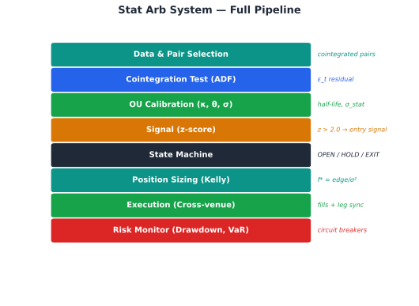
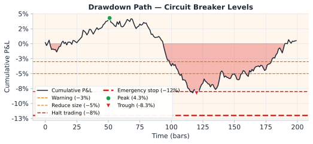

Statistical Arbitrage · บทที่ 20 — บทสรุป
Risk Management & Portfolio: สรุป Framework ทั้งเล่ม
จาก cointegration ถึง risk limits — ภาพรวมของ stat arb system ที่สมบูรณ์
แก่นของบทนี้ — บทสรุป
Stat arb ไม่ใช่แค่สูตรคณิตศาสตร์ — มันคือระบบที่ต้องการ data quality + statistical rigor + execution discipline + risk management ทำงานพร้อมกัน ขาดด้านใดด้านหนึ่งทำให้ edge หายไป
$$\text{Halt if: DD} > -8\% \quad \text{or} \quad \text{VaR}_{95} > 2\% \quad \text{or} \quad \rho_{\text{avg}} > 0.7$$
20.1 Framework Overview Diagram

Architecture ของ Stat Arb System — ทุก module เชื่อมกันเป็น pipeline จาก data ถึง execution
20.2 Drawdown Limits
Hierarchy ของ drawdown limits:
Level 1 — Per Trade: max loss = entry_z × σ_spread × size × 1.5 # ×1.5 = jump-risk buffer
Level 2 — Per Day: max daily PnL loss = 2% ของ total capital
Level 3 — Per Strategy: max drawdown = 10% ของ strategy capital
Level 4 — Portfolio: max portfolio drawdown = 15% → system pause
เมื่อ hit limit:
Level 1 → close trade
Level 2 → close all trades, no new entries ถึงวันถัดไป
Level 3 → reduce size 50%, review parameters
Level 4 → full stop, manual review required

Drawdown curve — เมื่อแตะ level 4 (-15%) ระบบหยุด รอ manual review และ recalibration
20.3 VaR/CVaR ของ Spread Position
VaR_95 = σ_spread × 1.645 × size × sqrt(hold_periods)
CVaR_95 = E[loss | loss > VaR_95]
≈ σ_spread × 2.063 × size × sqrt(hold_periods)
(สำหรับ Normal distribution)
ตัวอย่าง:
σ_spread = 0.075% (7.5bps ต่อ period)
size = $100,000
hold = 1 period
VaR_95 = 0.00075 × 1.645 × 100,000 = $123
CVaR_95 = 0.00075 × 2.063 × 100,000 = $155 (expected loss ใน worst 5%)
20.4 Black Swan Scenarios
Scenario Detection Response Recovery
Flash crash (>10% in 5m) price_change > 5× σ_daily Cancel all orders, close positions at market Wait 30m, recheck cointegration Exchange outage API timeout > 30s Hedge single leg on alternative venue Close hedge when API restores Cointegration breakdown ADF p-value > 0.10 rolling Enter INVALIDATED state immediately Refit model with 30-day rolling data Funding rate spike (>0.5%/8h) Rate change > 3× historical σ Reduce size 50%, widen stop-loss Normalize after 1 funding period
20.5 Pseudo-code risk_check()
def risk_check(portfolio, new_trade, limits):
"""
portfolio: current open positions + daily PnL
new_trade: proposed trade parameters
limits: RiskLimits object (max_size, daily_stop, max_corr, max_var)
"""
# 1. Check trade size
if new_trade.notional > limits.max_single_size:
return "REJECT", "Size exceeds limit"
# 2. Check daily drawdown
if portfolio.daily_pnl < -limits.daily_stop:
return "REJECT", "Daily stop hit"
# 3. Check correlation with existing positions
for pos in portfolio.positions:
corr = rolling_correlation(new_trade.spread, pos.spread, window=30) # 30 trading days
if corr > limits.max_correlation:
return "REJECT", f"Correlation {corr:.2f} with {pos.id}"
# 4. Check portfolio VaR
hypothetical = portfolio.positions + [new_trade]
new_var = compute_portfolio_var(hypothetical, confidence=0.95)
if new_var > limits.max_var * portfolio.total_capital:
return "REJECT", f"VaR {new_var:.1%} exceeds limit"
# 5. Check edge (from Ch19)
edge_result = compute_edge(new_trade)
if not edge_result["viable"]:
return "REJECT", f"Net edge {edge_result['net_edge_pct']:.2f}% <= 0"
return "APPROVE", "All checks passed"
20.6 สรุปบทเรียนทั้งเล่ม
Ch.1–3
พื้นฐาน Synthetic Process
ε = log(P_A) − β·log(P_B) คือ spread ที่ mean-revert; OU process อธิบาย dynamics; half-life = ln(2)/κ
Ch.4–6
Statistical Foundation
OLS/Kalman β; Engle-Granger cointegration; Hurst exponent H<0.5 = mean-reverting
Ch.7–9
Advanced OU Models
GARCH conditional volatility; Jump-Diffusion fat tail; Regime-Switching Markov chain
Robust Z-score
Median/MAD robust ต่อ outlier; rolling window z-score; entry/exit band design
State Machine
7-state machine ป้องกัน double-entry, race condition; INVALIDATED เมื่อ coint หาย
Position Sizing
Kelly f* = edge/σ²; half-life scaling; jump discount; max drawdown constraint
Perpetual Basis
Basis = perp − spot; fair basis จาก carry cost; entry เมื่อ excess > k·σ
Ch.14–15
Execution
Cross-venue leg risk; synchronization; Kalman dynamic β real-time update
Portfolio
MV optimal weights; correlation heatmap; equal-weight robust baseline
Ch.17–18
Applications
Commodity calendar spread (storage/convenience yield); Options parity arbitrage
Cost Analysis
Gross − fee − spread − slippage − funding − legging = Net edge; compute before every trade
Ch.20
Risk Management
4-level drawdown limits; VaR/CVaR; black swan procedures; portfolio heat monitoring
Spot↔CFD Swap Arb
Spot↔CFD Swap Arbitrage บน MT5: ขยายกรอบเดิมไปสู่ CFD/FX/โลหะ
Options-Based Stat Arb
IV Surface · Box Spread · IV Skew · Cross-venue IV (Deribit↔Bybit) · Vol Risk Premium
20.7 Next Steps
เส้นทางจากทฤษฎีสู่ Live Trading
Backtest ครบทุก module — test บน historical data ≥ 1 ปี รวม regime ต่างๆ ตรวจว่า Sharpe, max drawdown อยู่ใน targetPaper Trade 1–3 เดือน — รัน system โดยไม่ใช้เงินจริง บันทึก slippage จริง vs model, latency จริง, execution qualityLive Trading ด้วย Small Size — เริ่มด้วย 10% ของ target size เพิ่มทีละน้อยเมื่อ P&L confirmedMonitor และ Recalibrate — refit OU parameters ทุกสัปดาห์; ตรวจ cointegration ทุกวัน; review regime detection หลัง major eventsExpand Strategies — เพิ่ม spread ใหม่เข้า portfolio เมื่อมีทุนและ operational capacity พอ
Golden Rules ของ Stat Arb
ไม่มี edge ที่ "ถาวร" — ต้อง monitor และ adapt ตลอดเวลา
Cost analysis ก่อนทุก trade — ไม่ assume
Risk limits คือ non-negotiable — ไม่ override เพราะ "ครั้งนี้ต่างออกไป"
Regime awareness เสมอ — ตลาดมีสภาวะต่างกัน parameter ชุดเดียวไม่พอ
Execution quality กำหนด profitability เท่ากับ signal quality
Practitioner Note — Running Risk Checks
Run the full risk check every 60 seconds. Circuit breaker hierarchy: (1) pair-level: if pair drawdown > 3% → close pair; (2) book-level: if book drawdown > 5% → halve all sizes; (3) system-level: if book drawdown > 8% → halt all new entries, flatten over 2h. VaR must be computed from realized returns, not theoretical σ — model VaR underestimates tail risk by 2–3× in crypto.
Model Risk — Risk Model Limitations
Risk framework assumes the risk model itself is correct — but VaR at 95% is wrong by definition 5% of the time. During regime shift, correlations jump to 1.0, diversification benefit disappears, and all circuit breakers trigger simultaneously creating a "cascade halt" that prevents orderly exit. Position limits that seem conservative individually can be collectively catastrophic if all pairs are in the same macro regime.
แบบฝึกหัดสุดท้าย — Capstone
คำถาม: Bybit และ Lighter ประกาศ merge platform — spread หายไปทันที ระบบควร respond อย่างไร?
คำตอบแบบ step-by-step:
Detection: cointegration test ล้มเหลว (p-value > 0.10); spread พุ่งออก monotonically ไม่ mean-revertImmediate action: State machine → INVALIDATED สำหรับทุก open positionClose positions: ใช้ DE_RISK → EXIT sequence; ถ้า spread กว้างเกินไปใช้ market order แทน limitStrategy disable: ปิด signal generation ทันที; เข้า Level 3 or Level 4 drawdown protocolReview: ตรวจว่ามี spread อื่นที่ valid อยู่ในระบบ; recalibrate portfolio allocationLong-term: ประเมิน structural break — อาจต้องหา pair ใหม่ หรือ modify strategy สำหรับ merged venue
จบ Statistical Arbitrage — Bybit ↔ Lighter BTC Perp Framework
🏛️ ห้องสมุด Options & Arbitrage Statistical Arbitrage — เริ่มต้น